Track
Regulatory and institutional developments across major export corridors, monitored continuously rather than episodically.

Kanan’s Flagship Product
Trade Diagnostic & Decision-Support System.
Built for firms operating in trade-exposed value chains — reducing decision friction across regulation, market access, evidence posture, and routing.
What it does
Sector Watch is being built for firms that need to understand how trade policy, regulatory change, and market-access conditions affect specific commercial decisions.
The system is designed to answer a practical question with clarity: what is open, blocked, conditional, or still unclear for this firm, this product, and this corridor.
Who it is for
01
Firms navigating shifting trade rules, tariff exposure, and market-access conditions across multiple jurisdictions simultaneously.
02
Companies assessing what evidence, certifications, or regulatory alignment is required before entering or expanding in a regulated market.
03
Organisations whose supply chains, inputs, or outputs are directly affected by trade policy, industrial incentives, or geopolitical pressure.
Sector Watch is being built to operate continuously across export corridors — reading the regulatory environment, mapping it against firm-level positions, and surfacing what materially changes.
Regulatory and institutional developments across major export corridors, monitored continuously rather than episodically.
Each development is read against the firm’s operating profile — products, corridors, exposure — so what matters surfaces, and what does not falls away.
Material shifts in regulatory exposure are flagged the moment they emerge — before they become commercial constraints, certifications, or audit findings.
Open, blocked, conditional, or unclear — pathway viability is made explicit for each decision, rather than collapsed into a single answer surface.
Every conclusion is rooted in source-aware, reviewable structure. Polished prose is not allowed to suppress uncertainty.
Outputs are structured to support strategic discussion — faster, more informed, less dependent on episodic external advisory cycles.
The system does not replace executive judgment — it operationalises it.
Continuous structured intake from policy, trade, and institutional sources — classified, linked, and filtered for commercial relevance across key jurisdictions.
Incoming developments are assessed against firm-specific variables — product, corridor, jurisdiction, exposure. What matters is surfaced; what does not is filtered out.
A bounded, deterministic-first reasoning layer structures the signal environment into traceable outputs. Each decision state is classified as open, blocked, conditional, or unclear.
Firms receive a decision surface that shows what changed, why it matters, and where action or evidence is required — not a report to summarise, but a structure to act on.
The architecture is bounded today. It is built to extend.
Firms operating across jurisdictions cannot absorb the latency, cost, and ambiguity of episodic external counsel. They need a structured system that holds firm context continuously, reads regulatory movement against that context, and surfaces what materially changes.
Sector Watch is the flagship product through which Kanan Labs is building that infrastructure. The architecture is deliberately bounded today and deliberately extensible tomorrow: a deterministic-first decision-support layer now, a persistent advisory surface later. The discipline is the same at both stages — bounded reasoning, explicit uncertainty, preserved provenance, meaningful human authority.
Structured rules, typed entities, traceable evidence. Fluent prose is not allowed to substitute for grounded logic.
Where the system cannot responsibly conclude, it says so. Unknowns are surfaced — not disguised by polished output.
The system supports judgment by surfacing state, provenance, and evidence. It never silently replaces the decision.
Sector Watch is Kanan Labs’ flagship product, currently in development. If your firm operates in a trade-exposed environment and is thinking seriously about regulatory exposure across jurisdictions, we’d like to hear from you. Early-access conversations shape the system as it is built.
Your request has been received. We will be in touch shortly.